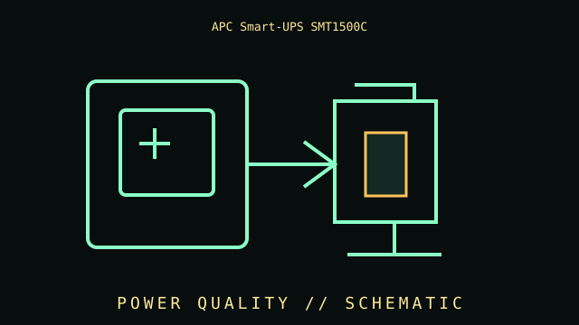

[ LINE-INTERACTIVE UPS // IDENTIFIED MODEL ]
APC Smart-UPS SMT1500C
Line-interactive 1500 VA / 1000 W, 120 V; eight NEMA 5-15R battery-backed outlets; AVR; sine-wave output; SmartConnect-enabled model. This record covers the specific labeled model and regional configuration, not every item in the product family.

ARCHIVAL IDENTIFICATION: Preserve the complete SKU, suffix, region, date code, manual revision, battery part (if applicable) and observed condition. Similar names do not prove equivalent hardware.
Model specifications & service record
| Subcategory | Line-interactive UPS |
|---|---|
| Topology / function | Line-interactive UPS with automatic voltage regulation; inverter takes over during an outage. |
| VA/W ratings and outlets | 1500 VA / 1000 W; 120 V; eight NEMA 5-15R output receptacles, battery-backed. |
| Battery / replacement | Sealed lead-acid, replaceable battery pack; replace with the exact APC-approved cartridge and follow the service procedure. |
| Runtime and conditions | APC publishes load-specific runtime estimates for this model. State actual watts and use a charged, serviceable battery; age, temperature, battery condition and load alter runtime materially. |
| Interfaces / monitoring | LCD, USB and serial communications, SmartConnect cloud connectivity (network access/service availability required) and SmartSlot for compatible accessories. Verify exact host/firmware and optional-card support. |
| Safety and limitations | 120 V model; observe 1000 W output limit. SmartConnect requires network connectivity and applicable APC service; SmartSlot options do not come standard unless explicitly listed. Battery replacement does not authorize opening the energized chassis. |
| Revision / exact identification | SMT1500C is not SMT1500IC; suffix differences affect connectivity/features. Confirm the product label and current manual/datasheet revision. |
Archival and service notes
- Record the nameplate and battery label before service; keep measured behavior separate from manufacturer ratings and note load, input, temperature and test date.
- Do not open energized mains equipment. Batteries can deliver high fault current and may contain hazardous materials; follow manufacturer handling, replacement and recycling instructions.
- For preserved units, record physical damage, alarms, missing parts, battery age/swelling/leakage and substituted components. Do not energize damaged equipment.
Manufacturer sources
- Manufacturer product specifications — APC Smart-UPS SMT1500CPrimary source for the named SKU’s regional specifications and available product documentation.
- Manufacturer manual / support referenceConsult the revision matching the complete label code. Runtime estimates are manufacturer estimates at stated loads and operating conditions, not a guaranteed duration for aged batteries.